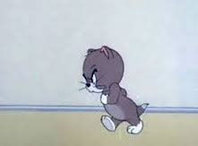

Ramana: Anger is of mind. You are not the mind.
"We think that there’s something fundamentally black about our nature, that something monstrous will emerge if we let go. If we see through it all, what will become of us? It’s scary.
Everything in the end is a defense against nothingness."
--Adyashanti
My friend is angry all the time. He’s angry at coworkers, angry at restaurant seaters, angry at drivers, and spiritual leaders. He’s angry at politics, prices, his girlfriend, and his own lack of enlightenment.
His anger makes others uncomfortable. People actually congratulate him when he keeps his fury lowkey.
Because anger is bad, n’kay? It’s unevolved, out of control.
We’re supposed to be nice, dammit. Polite, loving, kind. At all times.
So the requirement is to keep any pique under wraps. If we speak up we’re supposed to do it measuredly, keeping our voice level. We can say we’re angry but not scream.
Though of course we do scream.
Because in a world where we’re supposed to have control over ourselves and all situations, we turn out to be dishearteningly powerless. Whether it’s traffic or not being respected or not getting what we want or our moods,
our powerlessness shows. An inflamed temper is just more of it.
And then, enter guilt, regret, shame and self hatred. Enter addictions and the sudden compulsion to punish with too many chips or drink. As if we deserve the added self hate that comes after rage indulgence, too.
As if to punish the self for doing a poor job of presentation.
Because it turns out anger always seems to mean something about the me, and its flaws, its helplessness, its wrongness. Anger confirms every bad story of who we think we are. It says, “Here I am - the difficult one, the problem, the hard to handle, the flawed, mean, unkind, crazy.”
And also, simultaneously, “Here I am- the one who’s not going to take this. Here I am, standing up for my self.”
Defending the self. Protecting the self.
Although from what exactly? And what kind of self needs this much protection?
Well, every kind of self.
Every kind of self spends most of its time proving, “Here I am.”
And anger proves the me.
There’s I AM in it.
Along with a ton of fear that I AM NOT.
Because every self is terrified to be nothing.
And then here comes some situation that threatens to reveal that nothingness.
GRRRR! It shows up as anger.
Anger is disguised fear.
Fear of powerlessness and lack of control. Fear that we don’t matter, fear that we’re missing out, fear that we’re bad. Fear of disappearing via death.
Fear of not existing at all.
Oh lord, Mind-Tickler, that again? Does it always keep coming down to that?
Well, as Adya said above, "Everything in the end is a defense against nothingness."
But c'mon now Mind-tickler, so what? We can’t run around screaming, slashing and burning just because we’re allowing the self to protect its story, right? We live in a world where there are consequences to expressing rage without management.
This is where a lot of folks get confused. Because experiencing anger is not the same as expressing anger. Perhaps we could consider just letting it be there without much fanfare, without expressing or punishing.
Just another experience happening.
Besides, it’s not like, if we understand that anger is fear, or if we understand that the self tries to hide its nonexistence, there will be no more anger ever again.
That is not going to happen. Even Ramana got angry sometimes.
The self is always going to be afraid of exposure, and is always going to protect against that with noise and bluster and distraction posing as emotion.
And it's not even about whether it’s ok to be angry. We are angry. Who are we to say that’s not ok?
It's possible though, that sometimes a certain amount of fury may just fall away on its own, taking a bunch of addictive behavior with it.
Not because any of that is bad.
But because sometimes it becomes clear that nothing does not need protection.
Nothing is in no danger.
Nothing is fine as it is.
Just a whole lot of nothing pretending to be something.
Leaving nothing to be ticked off
At anything.
Want to watch Judy's Buddha At The Gas Pump interview? click here
"...rage is triggered when anyone restrains you.
In each moment the fire rages, it will burn away a hundred veils.
And carry you a thousand steps toward your goal."
--Rumi
"As long as we believe that we’re our bodies, we don’t have to know that we are infinite, our cells without limit, like music itself, free."
--Byron Katie
"What is your life about, anyway?
Nothing but a struggle to be someone.
Nothing but a running from your own silence."
--Rumi
